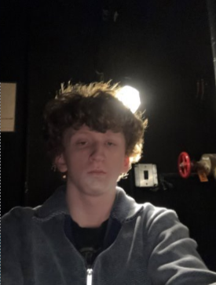
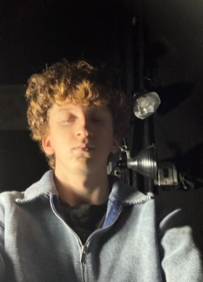

LIGHTING & SOUND
"Before this assignment, the lighting rig above a stage was just a collection of metal fixtures to me. The Lighting Textbook changed that completely. Going through each tool — from the ERS and its sharp, controllable beam, to the soft wash of a Fresnel, to the way a simple gel can transform the entire mood of a scene — I started to see the lighting system as a language. Every piece has a purpose, and every piece talks to every other piece. The dimmer rack feeds the fixtures, the board talks to the dimmer rack, the channels organize the board, and the cables carry it all. Learning how a two-fer can double your output, or how a top hat can clean up a messy spill, showed me that theatrical lighting is as much about problem-solving as it is about artistry. Some of the key tools I studied include the following:"
 GoboA metal or glass template inserted into an ERS to project patterns, shapes, or textures onto a surface.
GoboA metal or glass template inserted into an ERS to project patterns, shapes, or textures onto a surface.
 Pin ConnectorA stage-standard electrical connector used to link lighting fixtures to dimmer circuits.
Pin ConnectorA stage-standard electrical connector used to link lighting fixtures to dimmer circuits. Top HatA cylindrical tube that attaches to a fixture to cut down light spill and keep beams more controlled.
Top HatA cylindrical tube that attaches to a fixture to cut down light spill and keep beams more controlled. ChannelA numbered address on the lighting board that controls the intensity of one or more assigned fixtures.
ChannelA numbered address on the lighting board that controls the intensity of one or more assigned fixtures. StriplightsLong multi-bulb fixtures used to wash backdrops or cycloramas with broad, even color.
StriplightsLong multi-bulb fixtures used to wash backdrops or cycloramas with broad, even color. GelA thin sheet of colored plastic placed in front of a fixture to tint the beam with a specific color.
GelA thin sheet of colored plastic placed in front of a fixture to tint the beam with a specific color. Dimmer RackA rack of electronic dimmers that regulate the electrical power — and therefore the brightness — of each circuit.
Dimmer RackA rack of electronic dimmers that regulate the electrical power — and therefore the brightness — of each circuit. ParnelA hybrid fixture combining a PAR's wide wash with a Fresnel's adjustable beam, producing a medium spread of soft light.
ParnelA hybrid fixture combining a PAR's wide wash with a Fresnel's adjustable beam, producing a medium spread of soft light. Two-FerA Y-shaped cable that splits one dimmer circuit into two, letting two fixtures run on the same channel.
Two-FerA Y-shaped cable that splits one dimmer circuit into two, letting two fixtures run on the same channel. CableThe wiring that carries power from the dimmer rack to the fixtures, typically using stage pin or Edison connectors.
CableThe wiring that carries power from the dimmer rack to the fixtures, typically using stage pin or Edison connectors. ScoopA simple bowl-shaped floodlight that produces a soft, unfocused wash — great for general color fills.
ScoopA simple bowl-shaped floodlight that produces a soft, unfocused wash — great for general color fills.
 Lighting BoardThe main control console used to program, store, and execute all lighting cues during a performance.
Lighting BoardThe main control console used to program, store, and execute all lighting cues during a performance. ERSEllipsoidal Reflector Spotlight — the most common theatrical fixture, producing a sharp, focusable beam that accepts gobos and shutters.
ERSEllipsoidal Reflector Spotlight — the most common theatrical fixture, producing a sharp, focusable beam that accepts gobos and shutters. FresnelA fixture with a stepped lens that creates a soft-edged, adjustable beam — ideal for area lighting and smooth color washes.
FresnelA fixture with a stepped lens that creates a soft-edged, adjustable beam — ideal for area lighting and smooth color washes."Lighting Shadows taught me that where a light comes from matters just as much as the light itself. A front light at leg height throws dramatic shadows upward and makes a face look almost threatening, while the same fixture raised to chest height creates something far more natural and flattering. Move it behind the subject entirely and suddenly they're just a silhouette — defined by shape, not detail. What really caught my attention was the side lights. The two side lights in this exercise were completely different color temperatures, and even though that wasn't the point of the assignment, it showed me something I hadn't thought about before: light sources in the real world are never perfectly matched, and that inconsistency is actually what makes a lighting design feel alive. Every position below tells a different story with the same face."
// position & angle
 Front Light — Leg Height
Front Light — Leg Height Front Light — Chest Height
Front Light — Chest Height
Back Light Both Side Lights (notice the huge color temp difference)
Both Side Lights (notice the huge color temp difference)
Left Side Light Right Side Light
Right Side Light// color combinations
 Aqua Side Lights · Green Back Lights
Aqua Side Lights · Green Back Lights
 Orange Top Light · Pink Left Side · Purple Right Side
Orange Top Light · Pink Left Side · Purple Right Side
 Aqua Top Lights · Dark Blue Side Lights
Aqua Top Lights · Dark Blue Side Lights
 Yellow Top Lights · Dark Blue Left · Yellow Right Side
Yellow Top Lights · Dark Blue Left · Yellow Right Side
 Red Top Lights · Dark Blue Side Lights
Red Top Lights · Dark Blue Side Lights
"Using the Matt Kizer lighting simulator, I created five distinct lighting looks — each one built to answer a different design challenge. The daytime look was the hardest to make feel real; neutral light is deceptively simple, and getting it to feel natural without washing everything out took more adjustment than I expected. The nighttime look taught me how much the cyc color changes the entire atmosphere — a deep blue wash behind the performers makes the stage feel vast and cold even when the acting area is still lit. For composition, I used the spotlights to deliberately direct the eye, letting the shadows do as much work as the light itself. The somber look surprised me — red felt more oppressive than sad, which made me realize mood in lighting isn't just about color temperature but about intensity and contrast. My own look leaned into something dreamlike, using a cool cyan wash that felt neither day nor night but somewhere in between."
 Daytime General Lighting
Daytime General Lighting
 Nighttime General Lighting
Nighttime General Lighting
 Composition
Composition
 Somber Mood
Somber Mood
 Own Choice — Cyan Dreamscape
Own Choice — Cyan Dreamscape
"Prompt Book content unlocked."
TOOL MUSEUM


SCENIC PAINT

FLATS


PROPS